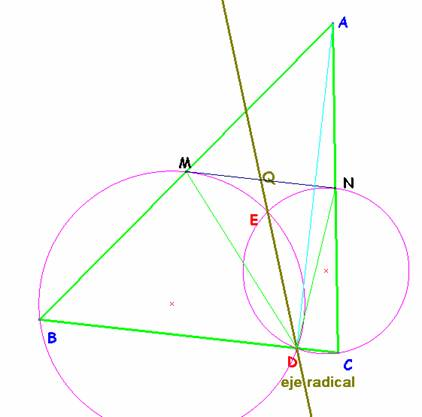

Problema para el aula
Problema 310.- 0.1 Sea AD la altura relativa al lado BC del triángulo acutángulo
ABC. M y N son los puntos medios de los lados AB y AC, respectivamente. Sea E
el segundo punto de intersección de las circunferencias circunscritas a los
triángulos BDM y CDN.
Muestra que la recta DE pasa por el punto medio de MN.
X Olimpíada Matemática Rioplatense
San Isidro, 13 de Diciembre de 2001
Nivel I – Segundo Día
http://www.oma.org.ar/enunciados/omr10.doc
Solución de Saturnino Campo Ruiz, profesor del IES Fray Luis de León, de Salamanca.-
Se trata de demostrar que la paralela media MN es tangente a las dos circunferencias.
El triángulo rectángulo en D, ADB está inscrito en una circunferencia de centro M, por tanto la mediana DM es el radio, y DM=BM=AM. E igualmente con el otro triángulo NDC. Así pues son isósceles los triángulos AMD y DNC.

La altura desde M en el primero (pasa por el centro de la circunferencia BDM) es, por tanto, perpendicular a la base BD, y también a la paralela a ella MN.
En consecuencia la tangente en M a la circunferencia BDM es la recta paralela media MN.
Esto mismo se verifica para la otra circunferencia. En conclusión el punto medio Q de MN tiene igual potencia respecto de ambas y por ello está en el eje radical, que, como sabemos también pasa por los puntos comunes D y E a estas circunferencias. c.q.d.